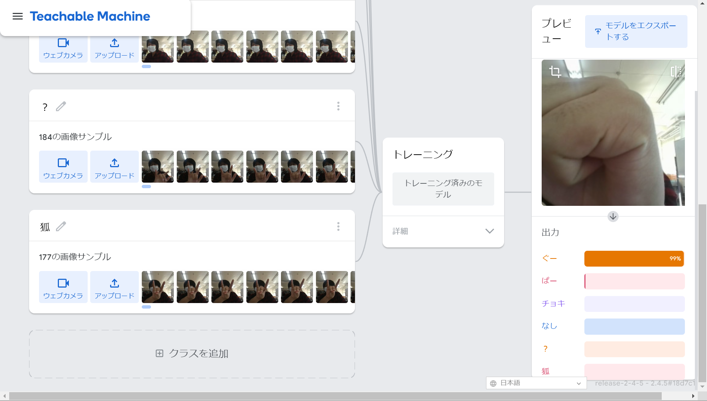

第2週目
2-1 １週目のレポートをHTMLで作る
１週目のレポート
1.内容
1週目に作成したプログラムに対しての感想や、その内容について書いた。
2.感想
公開されていると文章をよく考えないとという考えがよく浮かぶようになった。
2-2 機械学習体験

1.内容
じゃんけんの出す手を学習させて、映像から判断できるようにした。また、グーチョキぱーのどれにも似ているてを学習させて判別させた。
2.感想
画像を認識させる距離によって後の結果が変わっていてそこの部分は融通がききにくいものなんだと感じた。でも、紛らわしい画像でもしっかりデータを取らせれば判断ができるようになるんだなと思った。
どこまで似ているものだったら判断がつけることができないようになるのか気になった。右手と左手の区別がついているのか、読み込ました手と反対の手を使うと反応が悪くなった。
2-3 VR（バーチャルリアリティー：Virtual Reality）の体験
1.内容
ないようないよう
2.感想
かんそうかんそう